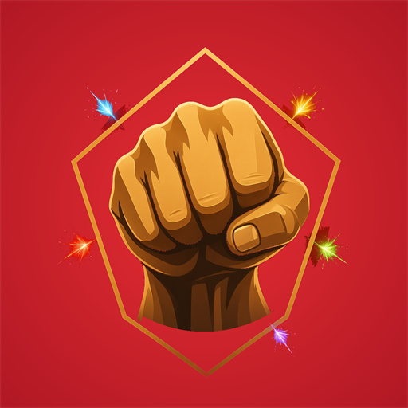
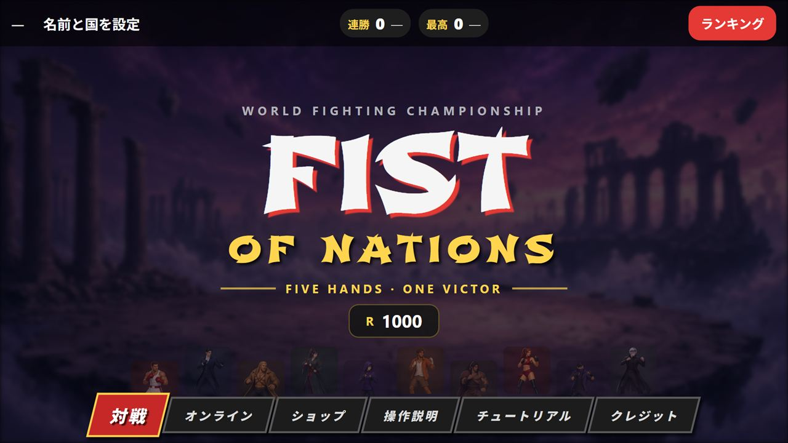
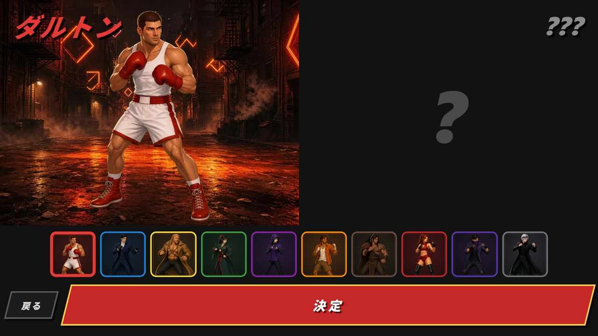
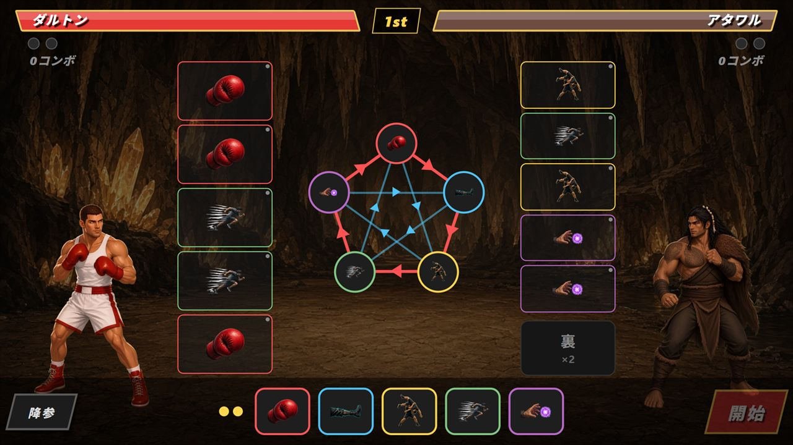
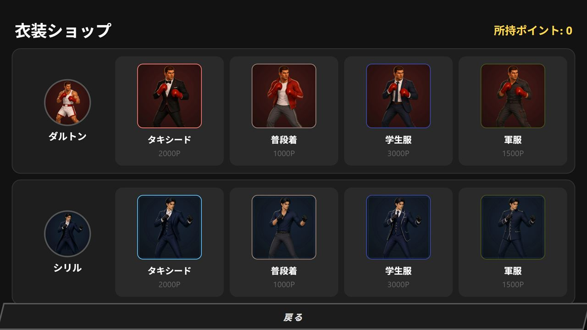
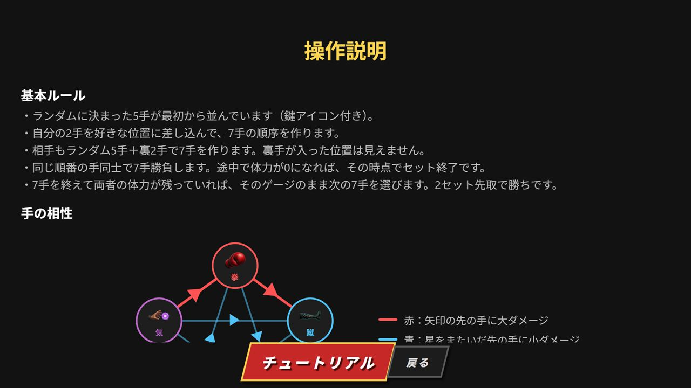

FON
Fist of Nations
テスト中拳・蹴・投・閃・気の読み合い型格闘ゲームです。CPU、オンラインの相手、ルームの相手と戦います。

起動した直後の画面です。中央に FIST OF NATIONS と出ていて、レートは R 1000 です。下のボタンは対戦、オンライン、ショップ、操作説明、チュートリアル、クレジットです。上には連勝 0 と最高 0、右上にランキングがあります。

キャラクターを選ぶ画面です。左はダルトンで、路地に立っています。右の相手はまだ「？」です。下に10人の顔が並び、赤い決定ボタンがあります。

手を差し込む画面です。左がダルトン、右がアタワルで、上は 1st です。中央の星が相性で、左の列に自分の5手が並び、右には相手の手と「裏 ×2」があります。下の手札を列に入れて、開始を押します。

衣装ショップです。上はダルトンで、タキシード 2000P、普段着 1000P、学生服 3000P、軍服 1500P です。下はシリルで、同じ4種類が並んでいます。右上の所持ポイントは 0 です。

操作説明です。基本ルールの下に、拳、蹴、気の相性図があります。赤い矢印は大ダメージ、青い矢印は小ダメージです。下にチュートリアルのボタンがあります。
遊び方
相手の5手が先に見えます。そのどこかに、相手の裏の2手が差し込まれています。自分も2手を好きな位置に差し込んで、7手の順番を作ります。差し込んだ位置から後ろは1つずつずれるので、ぶつかる手が変わります。
同じ番の手同士でぶつかり、体力が尽きたほうの負けです。体力が残っていれば、そのゲージのまま次の7手へ進みます。2セット先取で勝利です。
5すくみの相性
- 拳、蹴、投、閃、気の5手です。
- 隣の手には大ダメージ、ひとつ飛ばした手には小ダメージ、同じ手は相殺です。
- 連続で当てるとダメージが増え、4連続で必殺、5連続で確殺になります。
対戦とやり込み
- ひとりでCPUと戦えます。オンラインでは相手を探して対戦し、レートが動きます。
- 部屋コードを共有すれば、知り合いと対戦できます。このときレートと連勝は変わりません。
- 名前と国を設定すると、連勝とレートのランキングに国旗付きで載ります。
- 10人のキャラクターは、得意な手と苦手な手が違います。勝ってためたポイントで、衣装を買えます。
こんな人に
- じゃんけんの読み合いが好き
- コマンド入力なしで、格闘ゲームの駆け引きを味わいたい
- すき間の時間に、1試合だけ対戦したい
横画面で遊びます。対戦結果の画面に広告が出ます。ポイント2倍と、負けたときのポイント減少の回避は、広告を見ると選んだときだけです。
よくある質問
どんな読み合いですか
拳・蹴・投・閃・気の5手です。見えている手のあいだに裏の2手を差し込み、同じ順番の手同士でぶつかります。
誰と戦えますか
CPU、オンラインの相手、ルームの相手と戦えます。